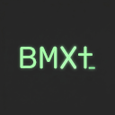

Privacy policy & disclaimer · プライバシーポリシーと免責事項
Last updated: July 24, 2026
This page describes how the BMXt browser extension (“BMXt”, “the Extension”) processes information when you install and use it, and includes a disclaimer on use of this experimental build. BMXt is published by UNRsports (“we”, “us”). This page is hosted on GitHub Pages for transparency and for use in store listings (for example, the Chrome Web Store).
This policy applies to the Extension installed from official distribution channels we authorize (such as the Chrome Web Store) and to information processed within your browser as part of using BMXt. It does not cover third-party websites you visit, except where the Extension reads limited browser data through Chrome APIs as described below.
setting -list, and
optional translation assist when you run translate -on). Command interpretation runs
locally via a bundled Rust/WebAssembly module; the UI and Chrome API effects run
in TypeScript on your device.
chrome.storage.local.
chrome.storage.local. Text you type during nav typing for
translation previews stays in session memory and is not saved to storage as typed content; only
translation assist on/off and your chosen language pair are persisted locally. The Extension UI
and service worker are not designed to call fetch() against arbitrary third-party
HTTPS URLs; connect-src 'self' in the packaged manifest reinforces that (Chrome Web
Store delivery and browser updates are separate). Optional http://*/* and
https://*/* access is requested at runtime only when you run
commands that inject into web pages (including the optional float prompt and nav overlay).
Depending on how you use BMXt, the Extension may access the following categories of information through Chrome APIs:
The Extension uses the tabs permission to query and manage open tabs—for example to
list tabs in its picker UI, read tab titles and URLs as presented by the browser for those tabs,
activate or move tabs, open or close tabs, and navigate within a tab when you issue supported
commands. This processing occurs locally to carry out tab and window management features you
initiate.
The Extension also uses the favicon permission so tab and search picker rows can show
site favicons derived from page URLs Chrome already exposes to the Extension. Favicons are resolved
and displayed locally; BMXt does not upload favicon requests or tab metadata to UNRsports servers
for this purpose.
The Extension uses the tabGroups permission to read and update tab group metadata and
to move groups between windows when you use grouping-related features.
The Extension uses the windows permission to create, focus, enumerate, or close
windows when you run commands that organize tabs and groups across windows.
The Extension uses chrome.storage.local (and, for the optional in-page float prompt,
chrome.storage.session) to keep data on your device. It also declares the
unlimitedStorage permission so user-imported UI background images and other local data
can exceed Chrome’s default extension storage quota. Everything below remains on your device.
Runtime source of truth for terminal sessions: while a BMXt popup window or float
host is open, session logs, open picker columns, pane focus, and tab-picker fold state live in the
BMXt UI page memory (not as the authoritative store in
chrome.storage.local). Closing the BMXt window or running exit on the last
terminal session discards that in-memory state. Legacy keys such as
bmxt_terminal_sessions_v1, bmxt_process_ui_v1, and
bmxt_tab_picker_fold_v1 may still be removed for cleanup on process exit
but are not the runtime source of truth for logs or picker layout.
bmxt_cmd_history). Cleared when you use the
reset-bmxt shortcut; otherwise kept across BMXt window close and process exit. Shared
between the popup window and the optional float prompt.
bmxt_ui_settings_v1). Imported
images are stored on your device as data URLs in this storage. Storage mode preference (internal
extension storage vs. an external folder you pick with the File System Access API;
bmxt_ui_settings_storage_v1). When external mode is on, > save setting
writes a settings bundle to that folder on your device.
--auto / --manual; bmxt_tabs_picker_settings_v1).
bmxt_search_picker_settings_v1).
search -list --history and search -list --bookmark. The service worker
may update this cache proactively when you visit pages, when bookmarks change, and on startup—not
only when you run search commands. Does not store page body text from
search -list --page (that scope reads open tabs live each time you run the command).
Cleared from setting -list → reset-search-cache or on uninstall; kept across BMXt
window close. (Versions before 0.6.9 used a legacy SQLite key bmxt_search_cache_db_v1
that is no longer written.)
snapshot -save (or from the tab picker). Stored in extension internal storage
(bmxt_snapshots_v1), under your external settings bundle
bmxt-ui-settings/snapshots/), or in an Obsidian vault folder you pick in
setting -list (bmxt_snapshot_storage_v1). Searchable with
search -list --snapshot. BMXt does not upload snapshots to UNRsports servers.
kind:key) may be stored per page origin (bmxt_nav_learned_targets_v1) so
later / jumps can prefer familiar targets. Stale keys are dropped. Remains on device
until cleared by uninstall or related resets.
toggle-bmxt-float), per-tab terminal session and browse UI state may be kept in
chrome.storage.session (for example bmxt_float_terminal_by_tab_v1,
bmxt_float_browse_state_by_tab_v1, related visibility / handoff keys) so the float can
survive same-tab navigation. This stays on your device for the browser session and is not sent to
UNRsports servers. Closing the popup window does not by itself clear the float host.
bmxt_job_db_v1 from versions before 0.6.9
may remain until uninstall but is no longer written.
translate -on /
translate -off is active and your saved language pair
(--ja-en / --en-ja; bmxt_typing_translate_v1).
When you close the BMXt window or run exit on the last terminal session, in-memory
process-scoped UI state (session logs, open picker columns, tab-picker fold) is discarded; legacy
process keys may be cleaned from storage. Command history, UI settings, translation assist
preferences, picker page-active settings, search metadata cache (history/bookmark titles and URLs
only; not page body), nav learned targets, optional job audit log, custom window display names, and
version-tracking keys remain until you clear them (for example
setting -list → reset-search-cache for the search metadata cache, the
reset-bmxt shortcut for command history and both popup/float hosts, or uninstalling the
Extension).
If you use setting -list to export or import a settings zip, the file is written to or
read from a location you choose through the browser’s download or file-picker APIs. BMXt does not
upload that file to UNRsports servers.
This storage remains on your device under Chrome’s extension storage rules.
If you run supported commands, the Extension may use the history and
bookmarks permissions to read titles and URLs from Chrome’s history and bookmark
stores—for example search -list --all, search -list --history, or
search -list --bookmark. In addition, the service worker may read history entries and
bookmark tree metadata in the background to keep the local search metadata cache up to date (see
section 4.4), even when you have not run a search command recently.
For ordinary http(s) pages (not chrome://, extension, or Chrome Web Store pages), the Extension may
use the scripting permission together with optional
http://*/* and https://*/* host access (granted when prompted, or in
extension settings) to run small, packaged helper scripts only when you issue a command
or toggle a related UI host. Examples: search -list --page (reads visible text from open
tabs when you run the command, without persisting page content to extension storage),
dom -list (page structure in --normal or viewport-sync
--with mode, and scrolling to an element you pick in the list),
snapshot -save (saves page text as Markdown with YAML frontmatter to a location you
configure in setting -list), nav -enter (a keyboard nav overlay on the
active tab for move, click, type, and related actions you control from the Extension UI), and the
optional in-page float prompt (toggle-bmxt-float, which loads a
packaged extension page into the active tab). When translation assist is enabled, text you enter
during nav typing in the Extension UI may also be processed as described in section 4.7. Nav may use
a lightweight content script registered for http(s) pages, with
chrome.scripting.executeScript as a fallback when that script is not loaded. That
processing is intended to occur on your device; the Extension is not designed to add
new persistent stores for those results or to upload page content to UNRsports servers as part of
these commands.
Future releases may add further user-initiated features that continue to run entirely on your device through Chrome APIs already covered above: deleting selected browsing-history entries; creating, editing, or deleting bookmarks and bookmark folders; and toggling visibility of specific DOM elements on pages where you have granted appropriate script access. We do not intend these additions to introduce UNRsports-operated remote collection of that data for their core behavior. When shipped, we will update this policy, release notes, and store disclosures as needed.
If you run translate -on, the Extension enables optional translation assist within its
UI. While assist is enabled, text you enter during nav typing mode in the Extension
UI may be passed to Chrome’s built-in Translator API (Japanese ↔ English) for
on-device translation and back-translation previews shown under the prompt. The Extension does not
send that text to UNRsports servers for translation.
Translation runs in the Extension page context only (not in injected page scripts or the service
worker). No additional manifest permission is declared for this feature; existing
storage permission covers the on/off flag and saved language pair
(translate -setting --ja-en / --en-ja). On first use, Chrome may download
language models for the requested language pair to your device. That download and on-device
processing are handled by Chrome (Google) under Chrome’s own terms. Translation assist requires a
supported desktop Chrome version (138 or newer) and availability of the ja↔en pair on your device.
Official builds implement Chrome API effects and the React UI in TypeScript, and
command interpretation (parse, registry, plans, and related prompt semantics) in
Rust compiled to WebAssembly. Both run locally in the extension
page and/or service worker. The WebAssembly module (bmxt_core_bg.wasm) is
bundled in the extension package and loaded from the extension’s own origin
('self'). BMXt does not download WebAssembly from the network for this
purpose. The packaged Content Security Policy includes script-src 'self' 'wasm-unsafe-eval'
so the browser may compile and instantiate that local module; this is not a
permission to fetch or run remote scripts, and it does not relax connect-src 'self'.
Search metadata caching uses in-process memory only (see section 4.4). (An earlier series removed
bundled WASM in version 0.3.5 for package size; current releases again ship a local WASM command
core.)
The Extension is not designed to download and execute arbitrary JavaScript from the network for its core behavior. Extension updates are delivered through the browser’s extension update mechanism (for example, via the Chrome Web Store when you install from there).
The packaged manifest’s Content Security Policy (including connect-src) is an extra
guardrail alongside that design; local WXT development may allow localhost script and WebSocket
endpoints in the same policy string.
BMXt does not transmit your tab list, tab metadata, command history, session log, or text you submit for translation assist to servers operated by UNRsports for collection or profiling as part of using the Extension.
When translation assist is enabled, Chrome’s built-in Translator API may process text you enter as described in section 4.7. BMXt does not receive copies of that processing on UNRsports servers. How Chrome handles on-device AI models, language-pack downloads, and any related telemetry is governed by Google’s policies for Chrome, not by the Extension’s own code.
When you use the Extension, your browser or operating system may still communicate with Google or other services under their own terms (for example, Chrome Web Store installation and updates, or Chrome itself). This policy does not replace Google’s policies for Chrome or the store.
This privacy policy page is hosted on GitHub Pages. Viewing this page involves GitHub’s hosting infrastructure; please refer to GitHub’s privacy statement for how GitHub processes technical data related to that access.
We process the information described above solely to provide the Extension’s stated functionality (managing tabs, groups, and windows; optional page inspection, search, nav overlay, in-page float prompt, UI locale and appearance settings, and translation assist through user-initiated commands) and to maintain minimal local UI state. We do not use this information for creditworthiness, lending decisions, or unrelated profiling.
BMXt is not directed at children under 13, and we do not knowingly collect personal information from children through the Extension for marketing purposes.
We may update this page (privacy policy and disclaimer) when the Extension’s behavior or legal requirements change. The “Last updated” date at the top of this page will be revised when we publish a new version. If the Extension materially changes how it handles data, we will reflect that here and, where required by applicable rules or store policies, in release notes or store disclosures.
Questions about this policy or the Extension’s privacy practices may be raised via the project repository:
https://github.com/UNRsports/bmxt
(for example, through GitHub Issues where applicable).
BMXt is an experimental / trial implementation. UNRsports (the developer) is not liable for any incidents, loss, or damage arising from your use of the Extension. You use BMXt at your own discretion and risk.
本ページは、ブラウザ拡張機能 BMXt（以下「本拡張機能」）の利用に際してどのような情報が どのように扱われるか（プライバシーポリシー）を説明するとともに、試験実装版としての 免責事項を記載します。本拡張機能は UNRsports（以下「当方」）により 提供されます。本ページは GitHub Pages 上で公開し、透明性の確保および Chrome ウェブストア等のストア申請に おけるプライバシーポリシー URL として利用できるようにしています。
本ポリシーは、当方が正式に配布する経路（Chrome ウェブストア等）からインストールされた本拡張機能と、 本拡張機能の利用に伴いブラウザ内で処理される情報に適用されます。ユーザーが閲覧する第三者のウェブサイト そのものの取り扱いは各サイトの方針に従いますが、本拡張機能が Chrome API を通じて限定的にブラウザ情報にアクセスする場合は、以下に記載します。
setting -list による
UI 言語・外観設定、translate -on 実行時の任意の翻訳アシストなど、ユーザーが起動した機能を含みます）。
コマンド解釈は同梱の Rust/WebAssembly モジュールで端末上に実行し、UI と Chrome API 効果は
TypeScript で端末上に実行します。
chrome.storage.local を用いて お使いの端末上で処理されます。
chrome.storage.local に書き込みます。翻訳アシスト用の nav typing 入力は
プレビュー用にセッション内メモリで扱い、入力本文そのものは storage に保存しません。翻訳アシストの
ON/OFF と言語ペア設定のみがローカルに保存されます。拡張ページ・サービスワーカーから
fetch() で任意の第三者 HTTPS に取りに行く設計にはしておらず、パッケージ manifest の CSP
（connect-src 'self'）はその補助線です（ストア配信・ブラウザ更新は別）。ページへの
スクリプト注入が要るコマンド（任意のフロート・プロンプトや nav オーバーレイを含む）のときだけ、
オプションの http://*/* / https://*/* を実行時に求めます。
利用内容に応じて、本拡張機能は Chrome API を通じて次のカテゴリの情報にアクセスすることがあります。
ピッカー UI の一覧表示、タイトルや URL
による操作、タブの移動・作成・閉鎖、対応するコマンドによるナビゲーション等のため、tabs
権限により開いているタブを参照・操作します。これらはユーザーが開始したタブ／ウィンドウ管理機能を
端末上で実現するためにのみ用います。
また favicon 権限により、タブ／search ピッカー行にサイトのファビコンを表示します（Chrome
が拡張機能に開示しているページ URL から解決）。ファビコンは端末上で取得・表示され、当方のサーバーへ
タブメタデータやファビコン要求を送信する設計にはしていません。
グループ関連の機能のため、tabGroups 権限によりグループ情報の参照・更新や、ウィンドウ間の
グループ移動等を行います。
タブやグループをウィンドウ間で整理する操作のため、windows 権限によりウィンドウの作成、
フォーカス、列挙、閉鎖等を行うことがあります。
chrome.storage.local（任意のサイト内フロート・プロンプトでは加えて
chrome.storage.session）を用いて端末内にデータを保持します。また
unlimitedStorage 権限を宣言し、ユーザーが import した UI 背景画像などのローカルデータが
Chrome の既定の拡張機能 storage quota を超えても保存できるようにしています。以下はいずれも端末内に留まります。
ターミナルセッションの実行時の正本: BMXt ポップアップ窓またはフロート・ホストが開いている間、
セッションログ・開いているピッカー列・ペインフォーカス・タブピッカーのツリー開閉は
BMXt UI ページのメモリが正本です（chrome.storage.local を権威ある保存先とはしません）。
BMXt ウィンドウを閉じる、または最後のターミナルセッションで exit すると、そのメモリ上の状態は
破棄されます。旧キー（bmxt_terminal_sessions_v1、bmxt_process_ui_v1、
bmxt_tab_picker_fold_v1 等）はプロセス終了時の掃除のために削除されることが
ありますが、ログやピッカー配置の実行時の正本ではありません。
bmxt_cmd_history）。reset-bmxt ショートカット使用時に消去。それ以外は
BMXt ウィンドウ閉じ／プロセス終了後も保持。ポップアップ窓と任意のフロート・プロンプトで共有。
bmxt_ui_settings_v1）。import した画像は data URL として端末内 storage に保存。
保存先モード（拡張機能内 storage か、File System Access API で選んだ外部フォルダか；
bmxt_ui_settings_storage_v1）。外部モード時は > save setting で
設定バンドルをそのフォルダへ書き込みます。
--auto / --manual；bmxt_tabs_picker_settings_v1）。
bmxt_search_picker_settings_v1）。
search -list --history / --bookmark の再走査を速くするため、プロセス内メモリに保持。
サービスワーカーは、search コマンドの実行に限らず、
ページ訪問時・ブックマーク変更時・起動時にこのキャッシュを先行的に更新することがあります。
search -list --page のページ本文は保存しない（コマンド実行のたびに開いている
タブから都度読み取り）。
setting -list → reset-search-cache またはアンインストールで消去。BMXt ウィンドウを閉じても保持。
（0.6.9 より前の旧 SQLite キー bmxt_search_cache_db_v1 は新規書き込みされません。）
snapshot -save（またはタブピッカー）実行時に
YAML frontmatter 付き Markdown として保存。拡張機能内 storage（bmxt_snapshots_v1）、
外部設定バンドル（bmxt-ui-settings/snapshots/）、または
setting -list で指定した Obsidian Vault 内（bmxt_snapshot_storage_v1）。
search -list --snapshot で検索可能。UNRsports サーバーへアップロードしません。
kind:key）を bmxt_nav_learned_targets_v1 に保存し、後続の /
ジャンプで既知の対象を優先することがあります。陳腐化したキーは削除されます。アンインストール等まで端末内に保持。
toggle-bmxt-float）
利用時、タブ別のターミナルセッションや browse UI 状態を chrome.storage.session
（例: bmxt_float_terminal_by_tab_v1、bmxt_float_browse_state_by_tab_v1、
表示／引き継ぎ関連キー）に保持し、同一タブ内の遷移でもフロートを維持できるようにします。ブラウザ
セッション内の端末上のデータであり、UNRsports サーバーへ送信しません。ポップアップ窓を閉じても
フロート・ホストはそれだけでは消えません。
bmxt_job_db_v1 が残ることがあるが、新規書き込みはしない。
translate -on / translate -off の状態と
保存した言語ペア（--ja-en / --en-ja；bmxt_typing_translate_v1）。
BMXt ウィンドウを閉じる、または最後のターミナルセッションで exit すると、プロセススコープの
UI 状態（セッションログ、開いているピッカー列、タブツリー開閉）はメモリから破棄され、旧プロセス用キーは
storage から掃除されることがあります。コマンド履歴、UI 設定、翻訳アシスト設定、ピッカー page-active
設定、検索メタデータキャッシュ（履歴／ブックマークの URL・タイトルのみ。--page 本文は含まない）、
nav 学習ターゲット、任意のジョブ監査ログ、ウィンドウ表示名、バージョン追跡キーは、
reset-bmxt ショートカット（コマンド履歴と popup／float 両ホストのクリア）、setting -list の
reset-search-cache（検索メタデータキャッシュ）、拡張機能のアンインストール等で消すまで保持されます。
setting -list で設定 zip を export／import する場合、ファイルはブラウザのダウンロードまたは
ファイル選択 API 経由で、ユーザーが選んだ場所に書き込み／読み込みされます。当方のサーバーへ upload する設計には
していません。
これらは Chrome の拡張機能ストレージの仕組みのもと、ユーザーの端末内に留まります。
対応するコマンドを実行した場合、history および bookmarks 権限により
Chrome の履歴・ブックマークからタイトルや URL を読み取ることがあります（例:
search -list --all、search -list --history、
search -list --bookmark）。加えて、サービスワーカーは search コマンドを直近に実行していなくても、
4.4 に記載の検索メタデータキャッシュを最新に保つため、バックグラウンドで履歴エントリおよびブックマークツリーの
メタデータを読み取ることがあります。
通常の http(s) ページ（chrome://、拡張機能ページ、Chrome ウェブストア等を除く）では、
ユーザーがコマンドを実行したとき、または関連する UI ホストを切り替えたときに限り、scripting
権限とオプションの http://*/* / https://*/*（プロンプトまたは
拡張機能の詳細設定で許可されたとき）により、同梱の小さなヘルパースクリプトを実行します。例:
search -list --page（コマンド実行時に開いているタブの可視テキストを都度読み取り。本文は拡張機能 storage に永続化しない）、dom -list（--normal またはビューポート連動の --with モードでのページ構造一覧と、
一覧で選んだ要素へのスクロール）、snapshot -save（setting -list で指定した保存先へ
YAML frontmatter 付き Markdown を保存）、nav -enter（アクティブタブ上のキーボードナビオーバーレイによる
移動・クリック・入力など、本拡張機能 UI からの操作）、任意のサイト内フロート・プロンプト
（toggle-bmxt-float。同梱の拡張ページをアクティブタブへ読み込み）。翻訳アシストが ON のとき、
本拡張機能 UI での nav typing 入力も 4.7 に記載のとおり処理される場合があります。nav では
http(s) 向けの軽量コンテンツスクリプトを用い、未読み込み時は
chrome.scripting.executeScript にフォールバックします。これらは
端末上で行う想定であり、当該結果を新たな永続ストアに蓄えたり、ページ内容を UNRsports の
サーバーに送信したりする設計にはしていません。
将来のバージョンでは、上記と同じ Chrome API を用い、引き続きユーザーが開始した操作の範囲で 端末内のみで完結する機能を追加する予定です。例: 閲覧履歴から特定エントリの削除、ブックマークおよびフォルダの 新規作成・編集・削除、スクリプトアクセスを許可したページにおける特定 DOM 要素の表示／非表示の切り替え。 これらの中核動作として、当該データを UNRsports のサーバーに収集目的で送る仕組みを新設する意図はありません。 実装時には本ポリシー、リリースノート、ストア上の説明を必要に応じて更新します。
translate -on を実行すると、本拡張機能 UI 内で任意の翻訳アシストが有効になります。アシスト ON
中の nav typing モードで本拡張機能 UI に入力したテキストは、Chrome 内蔵の
Translator API（日本語 ↔ 英語）に渡され、端末上で訳文・再訳プレビューがプロンプト下に
表示されます。当方のサーバーへ翻訳目的で送信することはありません。
翻訳処理は拡張ページのコンテキスト内でのみ行い、注入したページスクリプトやサービスワーカーでは行いません。
この機能のための追加 manifest 権限は宣言しておらず、ON/OFF と保存した言語ペア（translate -setting
--ja-en / --en-ja）には既存の storage 権限を用います。
初回利用時、Chrome が要求する言語ペアのモデルを端末にダウンロードする場合があります。そのダウンロードと
端末上の処理は Chrome（Google）が Chrome 自身の条件に従って行います。翻訳アシストには、対応するデスクトップ版
Chrome（138 以降）および端末上で ja↔en ペアが利用可能であることが必要です。
公式ビルドでは、Chrome API 効果と React UI を TypeScript で、コマンド解釈（parse・
レジストリ・計画・関連するプロンプト意味）を Rust を WebAssembly にコンパイルしたもので
実装し、いずれも拡張ページおよび／またはサービスワーカー上でローカルに実行します。
WebAssembly モジュール（bmxt_core_bg.wasm）は拡張機能パッケージに同梱され、
拡張機能自身のオリジン（'self'）から読み込みます。この目的でネットワークから
WebAssembly を取得することはありません。パッケージ CSP の
script-src 'self' 'wasm-unsafe-eval' は、その端末内モジュールのコンパイル／
インスタンス化を許可するためのものであり、リモートスクリプトの取得・実行を許すものではなく、
connect-src 'self' を緩和するものでもありません。検索メタデータキャッシュは
プロセス内メモリのみを使用します（4.4 節参照）。（過去の系列では 0.3.5 で同梱 WASM を廃止しましたが、
現行リリースは再びローカルな WASM コマンドコアを同梱します。）
本拡張機能の中核動作として、ネットワークから任意の JavaScript を取得して実行することは想定していません。 更新は、Chrome ウェブストア等を通じたブラウザの拡張機能更新メカニズムに従います。
パッケージ manifest の CSP（connect-src 等）はその設計に沿った補助線です。ローカルで
WXT 開発する場合、同一ポリシー文字列内で localhost のスクリプト・WebSocket を許可しています。
本拡張機能の利用に際し、タブ一覧・タブに関するメタデータ・コマンド履歴・セッションログ、および翻訳アシストに 入力したテキストを、UNRsports が収集・プロファイル目的で運用するサーバーに送信することはありません。
翻訳アシストが ON のとき、4.7 に記載のとおり Chrome 内蔵 Translator API が入力テキストを端末上で処理する場合が あります。当方のサーバーはその処理結果を受け取りません。端末内 AI モデル・言語パックのダウンロードおよび関連する テレメトリの取り扱いは、本拡張機能のコードではなく Google の Chrome に関するポリシーに従います。
一方で、Chrome や OS の動作として、Google 等のサービスとの通信が発生する場合があります（ウェブストア からのインストール・更新等）。その取り扱いは Google のポリシーに従い、本ポリシーは Chrome やストア そのものの条件に取って代わるものではありません。
本プライバシーポリシーページは GitHub Pages でホストされています。ページ閲覧時に GitHub のインフラを経由する点については、GitHub のプライバシーに関する説明をご参照ください。
上記の情報は、本拡張機能が明示する機能（ユーザーが開始したタブ・グループ・ウィンドウの管理、任意のページ参照・ 検索・ナビオーバーレイ・サイト内フロート・プロンプト・UI 言語／外観設定・翻訳アシスト）および最小限の UI 状態の維持のためにのみ用います。与信・融資の判断、これらと無関係なプロファイル目的には用いません。
本拡張機能は 13 歳未満の児童を対象としたものではなく、マーケティング目的で児童から意図的に個人情報を 収集することはありません。
本拡張機能の動作や法令・ストア要件の変化に応じて、本ページ（プライバシーポリシーおよび免責事項）を 更新することがあります。更新時には本ページ上部の「Last updated / 最終更新」を改めます。データの取り扱いに 重要な変更がある場合は、本ページおよび必要に応じてリリースノートやストア上の開示を更新します。
本ポリシーまたは本拡張機能のプライバシーに関する問い合わせは、次のリポジトリから行ってください（GitHub Issues 等）。
https://github.com/UNRsports/bmxt
本プログラムは試験実装版です。本プログラムを使用することで発生した如何なる事象についても、 開発者（UNRsports）は責任を負いません。利用はユーザー自身の判断と責任において行ってください。
© UNRsports · BMXt · GitHub